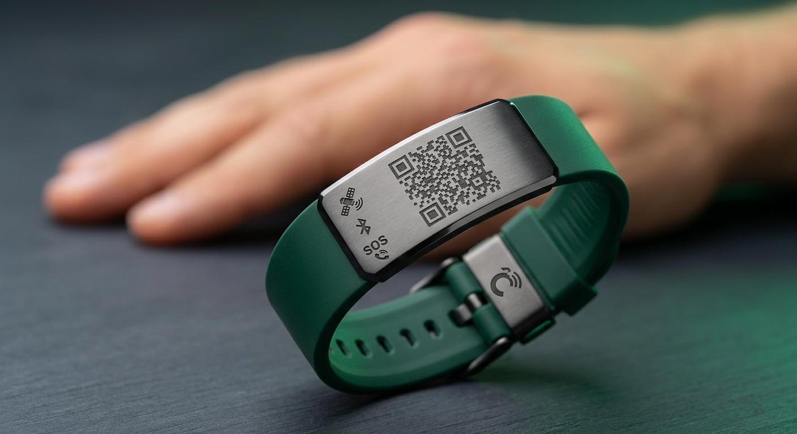
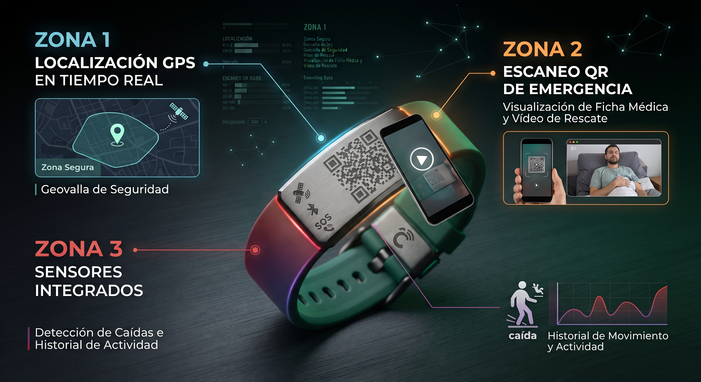
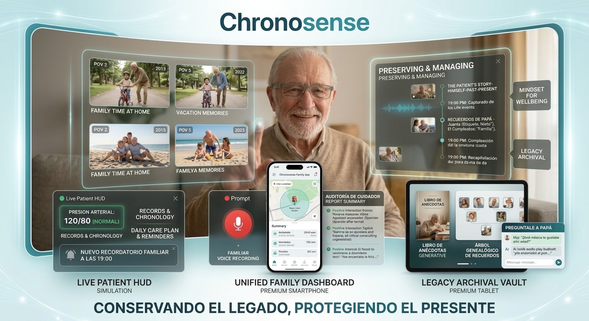
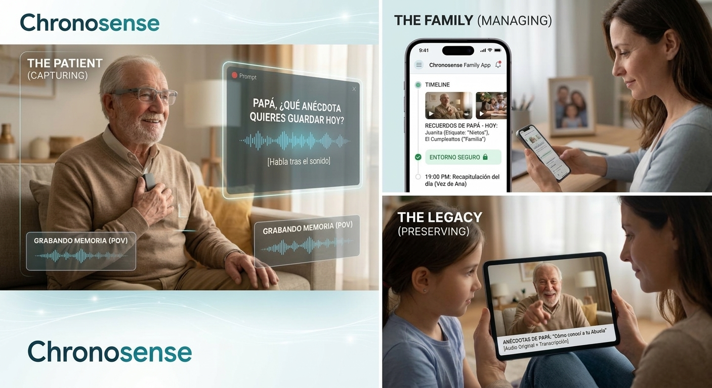

"Volver a pasar por el corazón": Ecosistema de inteligencia artificial ambiental que combina wearables POV, geolocalización segura de rescate y modelos multimodales para mitigar el deterioro cognitivo.
Three Pillars of Care & Preservation
Diseñado para ofrecer fricción cero al paciente y seguridad absoluta a los familiares cuidadores.
Estímulos de voz diarios automatizados usando la voz real de seres queridos. Captura POV manos libres a través de gafas inteligentes.
Fricción cognitiva ceroSubida cifrada inmediata a la nube privada con borrado local automático. Auditorías de seguridad y protección activa continua.
Cifrado seguro AES-256Indexación mediante IA multimodal de recuerdos vitales, historias y consejos para preservar el patrimonio autobiográfico.
Archivo histórico generativoUna matriz completa de funciones de seguridad pasiva y activa diseñada para la tranquilidad absoluta de la familia y la autonomía protegida del paciente.
Detectar de forma inmediata desplazamientos fuera del horario habitual de descanso para prevenir riesgos en la calle.
Aviso automatizado anticipado al cuidador cuando la pulsera necesita cargarse, garantizando autonomía continua.
Alertar de inmediato ante periodos inusuales de inactividad o posibles caídas dentro o fuera del hogar.
Capacidad de avisar simultáneamente a varios familiares y contactos de confianza con un solo toque o comando.
Consultar desplazamientos anteriores y patrones de ruta habituales para una mejor supervisión médica.
Alerta instantánea al cuidador si la persona se quita la pulsera de la muñeca de forma voluntaria o accidental.

Figura 3: Diseño de la pulsera inteligente con geolocalización GPS y código QR de emergencia.

Figura 4: Matriz de funciones activas de protección y supervisión continua.
Esto es lo que verá cualquier transeúnte o autoridad al escanear el código QR de la pulsera en caso de pérdida:
"Hola, soy Manuel García"
Vídeo personal de identidad y orientación activa.
📍 Dirección de retorno segura: Calle Mayor 42, Madrid
📞 Contacto prioritario: +34 600 000 000 (Familiares)
Compromiso absoluto con la dignidad del paciente, el rigor geriátrico y el cumplimiento estricto de las normativas internacionales de protección de datos.
Cifrado de extremo a extremo AES-256. Ningún dato de geolocalización o biométrico se almacena sin el consentimiento explícito de tutores legales.
Diseñado bajo supervisión neurocognitiva para minimizar falsas alarmas y ofrecer máxima discreción y comodidad al portador.
Protocolos para registrar las preferencias de asistencia y de vídeo en fases tempranas, protegiendo siempre la autonomía y dignidad.
Interfaces de Usuario y Arquitectura de Producto
Visualización de las pantallas desarrolladas para pacientes, supervisión familiar y exploración del legado.

Figura 1: Vista general de las tres perspectivas operativas del sistema Chronosense.

Figura 2: Panel avanzado de auditoría, cronología de recuerdos y HUD del paciente activo.
¿Eres investigador en Google DeepMind, líder de producto en Meta Reality Labs o inversor en HealthTech? Estamos abriendo vías de validación y colaboración tecnológica de alto nivel.